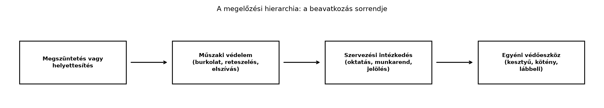

Egy cukrászüzemben a reggeli műszak egyszerre több munkafolyamatot indít el: az egyik tanuló forró karamellt főz, a másik élesztős tésztát dagaszt, a harmadik a hűtőkamrából hoz vajat, a pult mögött pedig valaki éppen tisztít. Ha ezekben a helyzetekben nem ismerjük fel a veszélyeket, a figyelmetlenség néhány másodperc alatt égési sérüléshez, vágáshoz vagy csonttöréshez vezethet. A munkavédelem nem elvont jogi kérdés, hanem annak a rendje, hogy mindenki épségben, egészségben végezze a munkáját. Ebben az alfejezetben sorra vesszük a cukrászüzem jellegzetes veszélyeit, és megtanuljuk, hogyan előzhetjük meg őket a beavatkozások helyes sorrendjében. Ez a tudás később visszaköszön a gépbiztonságnál, a cukorfőzésnél és a fánksütésnél is.
A cukrászüzemi veszélyeket nem érdemes külön-külön, listaként megjegyezni. Érdemesebb úgy gondolkodni, mint egy térképen: minden munkaterületen másféle veszély dominál, és a megelőzés mindig egy négyfokú sorrendet követ. Az alábbi ábra ezt a sorrendet mutatja; a veszélycsoportokat a táblázat sorolja fel.

A táblázatban a leggyakoribb veszélyeket, azok lehetséges következményeit és a megelőzés elsődleges eszközét foglaljuk össze.
| Veszélyforrás | Jellemző üzemi helyzet | Lehetséges következmény | Elsődleges megelőzés |
|---|---|---|---|
| Forró cukorfőzet, karamell | cukorfőzés, grillázs, dobos cukor | mély égési sérülés, forrázás | zárt rendszer, merőkanál, védőkesztyű, szervezett munkatér |
| Forró olaj | fánksütés | olajfröccsenés, tűz | hőfokszabályozás, fedő, olajsütő védőrács |
| Gőz, forró sütő | pároló, kemence, tepsi kiemelése | gőzforrázás, égés | sütőkesztyű, ajtónyitás előtti gőzleengedés, képzés |
| Kések, szeletelők | tortaszeletelés, gyümölcsdarabolás | vágott seb | éles kés, csúszásgátló, vágásirány testtől elfelé |
| Gépek mozgó részei | dagasztógép, tésztanyújtó | behúzás, zúzódás, amputáció | védőburkolat, reteszelés, gépoktatás |
| Csúszós padló | víz, olaj, liszt a padlón | csonttörés, ficam | azonnali feltakarítás, csúszásgátló burkolat |
| Terhek emelése | liszteszsák, vizes vödör, tésztaüst | derék- és vállsérülés | gépi emelő, kocsi, kétfős emelés, emeléstechnika |
| Hideg kamra, sokkoló | mélyhűtött áru kihozatala | kihűlés, bezártság | belső vészjelző, ajtótámasz, időkorlát, meleg ruha |
| Lisztpor | lisztöntés, dagasztás | lisztallergia, légúti irritáció, porrobbanás veszélye | elszívás, zárt tároló, nedves takarítás, robbanásbiztos berendezés |
| Tisztító- és fertőtlenítőszerek | napi takarítás, géptisztítás | vegyszer égés, mérgezés, gázképződés keveréskor | biztonsági adatlap, címke, tilos keverni, védőszemüveg |
Definíció. Veszély minden olyan dolog, állapot vagy tevékenység, amely sérülést, egészségkárosodást vagy anyagi kárt okozhat. Kockázat annak a mértéke, hogy a veszélyből milyen valószínűséggel és milyen súlyos következmény származik. A kockázatértékelés az a folyamat, amely során a munkáltató feltárja a veszélyeket, felbecsüli a kockázatot, és meghatározza a szükséges megelőző intézkedéseket.
Szabály. A megelőzési intézkedéseket mindig a következő sorrendben kell mérlegelni, és lehetőség szerint a magasabb szintű megoldást kell választani:
(Ellenőrizendő: a munkavédelmi törvény megelőzési alapelvei.)
Ezt a sorrendet megelőzési hierarchiának nevezzük. Az egyéni védőeszköz soha nem lehet az elsődleges megoldás, mert a viselője hibázhat, elfelejtheti használni, vagy az eszköz megsérülhet.
A legnagyobb hőmérsékletű anyagok a cukrászatban a forró cukorfőzet (a fondán- és habszirup kb. 115–120 °C, a karamell kb. 160–180 °C; ellenőrizendő: használt recept és berendezés) és a fánksütő olaj (jellemzően 170–185 °C, ellenőrizendő: gyártói előírás). A cukoroldat tapadós, rátapad a bőrre, és mély égési sérülést okoz. A forró olaj fröccsenése szintén súlyos égést okozhat, és ha az olaj túlhevül, öngyulladás is bekövetkezhet.
A gőz szintén forrázást okoz: a sütőből kinyíló gőz, a fedő alól felszálló pára, vagy a nagynyomású kávégép gőzcsöve mind forrázási veszélyt jelent. A sütő belső fala és a tepsi fémfelülete pedig égési sérülést okozhat, ha nem megfelelő eszközzel nyúlnak hozzá.
Megelőzési hibák és megoldások:
Az ábra a sütőajtó biztonságos nyitását mutatja. Előbb mindkét kezedre sütőkesztyűt húzol, amely az alkarodat is takarja (1), és az ajtó zsanéroldalán, oldalt állsz (2). Az ajtót résnyire nyitod, és megvárod, amíg a gőz a túlsó résen, tőled elfelé eltávozik; az arcod közben távol van (3). Csak ezután nyitod ki teljesen az ajtót (4), a tepsit két kézzel, száraz kesztyűvel emeled ki (5), és az előre kijelölt, szabad hőálló felületre teszed le (6). Nedves kesztyűt soha ne használj, mert a víz átvezeti a hőt.
Figyelem. A forró cukor és olaj égési sérülése azonnali orvosi ellátást igényelhet. Az érintett területet azonnal, bőven folyó hideg vízzel (nem jeges vízzel) kell hűteni legalább 20 percig (ellenőrizendő: hatályos elsősegély-ajánlás, OMSZ/ERC), a rátapadt ruhát nem szabad letépni, és mentőt kell hívni, ha a sérülés kiterjedt. Az elsősegély részleteit a Tűzvédelem és elsősegély a cukrászműhelyben alfejezet tárgyalja.
A konyhai kések, a szeletelőgépek, a tésztavágók és a darálók éles alkatrészei vágott sebeket okozhatnak. A gépek behúzó nyílásai (pl. tésztanyújtó hengerei, dagasztókar, húsdaráló) pedig súlyos, maradandó sérülést okozhatnak, ha valaki működés közben belenyúl.
Szabály. A gépek védőburkolatát, reteszelését és vészkapcsolóját tilos kiiktatni. A gépet csak azután szabad tisztítani, javítani vagy kézzel mozgatni, hogy áramtalanították, és forgó része teljesen leállt. Ezt a szabályt a Gépbiztonság: veszélyforrások, védőberendezések és biztonságos munkavégzés alfejezet részletesen tárgyalja.
A kések használatánál a vágásirány mindig a testtől elfelé mutasson. A kést stabil, csúszásgátló alátéten használjuk. Tompa kés nagyobb erőt igényel, és könnyebben megcsúszik, ezért a kést élesen kell tartani. A szeletelőgépet csak a gyártó által előírt védőberendezéssel szabad működtetni, a maradékot pedig tolófogantyúval, nem kézzel kell adagolni.
A helyes képen a kést teljes marokkal fogod a nyélen (1), a tartó kéz ujjai behajlítva, „karomként” fogják az anyagot, és az ujjpercek vezetik a penge lapját (2); a deszka alatt csúszásgátló alátét van (3). A hibás képen a nyújtott ujjhegyek a penge előtt, a vágási zónában vannak (4). A kést nyéllel előre, éllel lefelé adod át (5), letenni pedig az asztal hátsó szélére, éllel befelé teszed (6).
A cukrászüzem padlóján gyakran kerül víz, olaj, liszt, tojás vagy krémcsepp. Ha ezt nem takarítják fel azonnal, csúszós réteg keletkezik, ami eséshez, csonttöréshez vezethet. A padló nedvességét és szennyeződését a munkafolyamat alatt is folyamatosan kontrollálni kell. A kiömlött folyadékot azonnal fel kell törölni, és a területet „csúszásveszély” táblával kell jelölni, amíg meg nem szárad.
Megjegyzés. A csúszásgátló munkacipő nem helyettesíti a takarítást, csak kiegészíti azt. A munkacipő talpának vízzel és olajjal szemben is ellenállónak kell lennie, a sérült talpú cipőt ki kell cserélni. A takarítási rend kialakítása a Takarítás, fertőtlenítés, mosogatás és hulladékkezelés alfejezetben részletesen szerepel.
A liszteszsákok jellemzően 25 kg-osak, a vizes vödör, a tésztaüst vagy a hűtőkamrából kivett vajtömb is nehéz lehet. A helytelen emelés – hajlott derékkal, a terhet a testtől távol tartva – az ágyéki gerinc szakaszát terheli, ami hosszú távon gerincsérvhez, heveny derékfájáshoz vezethet.
Példa. Egy 25 kg-os liszteszsák felemelésekor a hát alsó szakaszára ható erő a testhelyzettől függően a teher többszöröse is lehet. Ha a törzs előrehajlik, a derékra ható nyomaték megnő, és a porckorongokra jutó nyomás a testközeli, egyenes háttal végzett emeléshez képest akár a többszörösére is nőhet (ellenőrizendő: ergonómiai szakirodalom számszerű értékei). Ezért a nehéz zsákot lehetőleg gépi emelővel, kocsival vagy kétfős emeléssel kell mozgatni. Az egyedül végzett emelésnél a terhet a testhez közel kell tartani, a lábakkal kell emelni, a térdet hajlítva, a hátat egyenesen tartva.
A helyes emelésnél terpeszben állsz, a zsák a lábad előtt van (1), térdből guggolsz le (2), a hátad egyenes (3), a terhet a testedhez közel fogod (4), és lábizommal, csavarás nélkül emelsz fel (5). A hibás képen a térd nyújtott (6), a hát görbe, ezért az ágyéki gerincszakasz kapja a legnagyobb terhelést (7), a teher távol van a testtől (8), és a dolgozó emelés közben csavarja a törzsét (9). Nehéz tehernél elsőként kocsit, gépi emelőt vagy kétfős emelést válassz.
A cukrászati munka sok ismétlődő mozgást is tartalmaz: habverés, tésztanyújtás, nyomózsák nyomása, csomagolás. Ha ezeket hosszú ideig szünet nélkül, rossz testtartásban végzik, ízületi, ín- és izomfájdalmak alakulhatnak ki. Szervezési intézkedés: munka közben rövid, váltott mozgású szüneteket kell beiktatni, és a munkafeladatokat úgy kell szervezni, hogy a munkavállaló ne végezze egész nap ugyanazt a terhelő mozdulatot.
A hűtőkamrák és a sokkoló hűtők jellemzően +2 °C és −40 °C közötti hőmérsékleten üzemelnek (ellenőrizendő: gyártói adatlap, vállalati hűtési napló). A hideg kamrában hosszabb időt töltő dolgozó kihűlhet, a hideg fémfelületek megérintése fagyási sérülést okozhat. A kamraajtó záródása esetén a benn rekedt személy pánikba eshet, és ha nincs belső vészjelző, a helyzet életveszélyessé válhat.
Szabály. A hűtőkamra ajtaját belülről mindig ki lehessen nyitni, vagy belső vészjelző gombbal kell ellátni. A dolgozó a kamrában végzett feladatot meleg kabátban, sapkában és kesztyűben végezze, és korlátozza a benn tartózkodás idejét. A sokkolóba nyúlni csak hosszú ujjú védőruhában és gyors mozdulatokkal szabad. A hűtőberendezések biztonságos használatát a Hőelvonó berendezések: hűtők, mélyhűtők, sokkoló, fagylaltgép alfejezet részletezi.
A liszt szerves por, amely levegővel keveredve, megfelelő koncentrációban robbanóképes elegyet alkothat. A lisztpor-robbanáshoz egyszerre kell jelen lennie a finom pornak, a levegő oxigénjének és egy gyújtóforrásnak (pl. elektromos szikra, nyílt láng). A valóságban ez a veszély a nagyüzemi malom- és sütőipari környezetben jelentős; a kis cukrászüzemben a porfelhő kialakulása ritkább, de a lisztöntés és a dagasztás során mégis kerülni kell a porképződést. A lisztpor belélegezve légúti irritációt okozhat, és lisztallergiás vagy lisztérzékeny embereknél súlyos tüneteket válthat ki.
Megelőzés: a lisztet zárt edényben, kisebb adagokban kell adagolni, a porképződést elszívóval vagy nedvesítéssel csökkenteni, és a felületeket nedves eljárással takarítani. A száraz seprés lisztport ver fel, ezért a cukrászüzemben a padlót nedvesen kell tisztítani. A porrobbanás elleni műszaki védelem (robbanásbiztos elektromos szerelvények, földelés, elszívó rendszer) nagyobb üzemekben kötelező lehet; a pontos követelményt a munkavédelmi és tűzvédelmi előírások határozzák meg (ellenőrizendő: munkavédelmi törvény és tűzvédelmi szabályzat, robbanásvédelmi előírások).
A tisztító- és fertőtlenítőszerek maró hatásúak lehetnek, gőzük irritálhatja a légutakat, szembe kerülve szemsérülést okoznak. Különösen veszélyes, ha savas és lúgos vagy klórtartalmú szereket összekevernek: mérgező gáz (pl. klórgáz) szabadulhat fel. Ezért a tisztítószereket tilos egymással keverni.
Jogszabály. A munkavédelmi törvény (1993. évi XCIII. törvény) alapján a munkáltató köteles a munkahelyi kockázatokat értékelni, a munkavállalót a veszélyekről tájékoztatni, és a szükséges védőfelszerelést biztosítani. A vegyi anyagoknál a gyártó által kiállított biztonsági adatlap (SDS) tartalmazza a veszélyeket, a tárolási, kezelési és elsősegélynyújtási tudnivalókat. (A konkrét rendelkezések és határértékek ellenőrizendők a mindenkori munkavédelmi és vegyi anyag szabályozásban.)
Megjegyzés. A biztonsági adatlapot a munkavállaló számára hozzáférhető helyen kell tárolni, és a dolgozót be kell tanítani az adatlap értelmezésére. A címkén látható piktogramok (pl. maró, méreg, irritáló) azonnali felvilágosítást adnak a veszély jellegéről.
A kockázatértékelés során minden veszélyhez két számot rendelünk 1-től 5-ig:
A kockázati értéket a két szám szorzataként kapjuk: . Az érték alapján döntjük el, milyen sürgősen kell beavatkozni:
Fontos: a mátrix határait és a pontozást a munkáltató határozza meg a saját kockázatértékelési eljárásában. Az itt megadott besorolás tanulási egyszerűsítés, nem jogi előírás.
Kidolgozott példa. Egy cukrászüzem reggeli műszakjában a tanuló forró karamellt készít. Elemezzük a forró karamell kézi öntésének kockázatát.
Javasolt intézkedések a megelőzési hierarchia szerint:
A kockázatértékelést dokumentálni kell, és a bevezetett intézkedések után újra el kell végezni, hogy igazoljuk: a kockázat elfogadható szintre csökkent.
Továbbvitt eredmény. A megelőzési hierarchia és a valószínűség × súlyosság kockázati mátrix lesz a kiinduló keret a Gépbiztonság: veszélyforrások, védőberendezések és biztonságos munkavégzés alfejezetben, ahol a gépek behúzási, vágási és elektromos kockázatait pontozzuk; a(z) A cukorkészítés balesetvédelme, higiéniája és hibái alfejezetben, ahol a forró cukorfőzet égési kockázatát kezeljük; és a Tűzvédelem és elsősegély a cukrászműhelyben alfejezetben, ahol a tűzveszélyes anyagokra és a sérülésekre vonatkozó speciális szabályokat vesszük alapul.
Egy cukrásztanuló a hűtőkamrában dolgozott, és az ajtó becsukódott mögötte. A kamra belülről nem volt nyitható, a tanuló néhány percig nem tudott kijutni, és kihűlt. Az üzemvezető a kockázatértékelés alapján ellenőrizte a hűtőkamra ajtaját, és a belső nyitószerkezetet pótoltatta (műszaki védelem), a munkarendbe pedig bekerült, hogy a hűtőkamrában senki nem dolgozik egyedül (szervezési intézkedés). A kockázatértékelést a javítás után újra elvégezték, és dokumentálták. A tanulság: a hiányzó védelem pótlása műszaki megoldással a leghatékonyabb, és a kockázatot minden változtatás után újra kell értékelni.
1. feladat (A)
Sorolj fel legalább öt, a cukrászüzemben előforduló veszélyforrást, és
mindegyikhez adj egy-egy konkrét üzemi példát!
2. feladat (A)
Igaz vagy hamis? Javítsd ki a hamis állításokat!
a) A hideg kamrában a munka előtt mindig meg kell győződni arról, hogy
az ajtó belülről nyitható, vagy van belső vészjelző.
b) A lisztpor nem okozhat robbanást kis cukrászüzemben, ezért nem kell
foglalkozni a porral.
c) A tompa kés biztonságosabb, mert kevésbé vág mélyen.
d) A forró karamell kiömlésének kockázatát egyéni védőeszközzel kell
elsőként csökkenteni.
3. feladat (B)
Végezz el egyszerű kockázatértékelést egy adott munkaműveletre:
forrázott tészta készítése gőz felszabadulással.
Határozd meg a veszélyt, add meg a valószínűséget (V) és a súlyosságot
(S) 1–5 skálán, számítsd ki az
értéket, és javasolj legalább két intézkedést a megelőzési hierarchia
különböző szintjeiről!
4. feladat (B)
Egy 25 kg-os liszteszsákot kell felemelni. Két dolgozó együttesen emeli.
A kézi emelés megengedett tömege nemtől, életkortól és gyakoriságtól
függ, és fiatalkorú tanulóra szigorúbb érték vonatkozik (ellenőrizendő:
a kézi anyagmozgatásról szóló hatályos rendelet); a feladatban tanulási
célból az egy főre jutó emelési terhelés felső határa 25 kg. Kérdés:
hány kg jut egy dolgozóra, ha a zsákot két oldalról, egyenletesen
emelik? Ez a terhelés megengedett-e? Miért fontos a testközeli
emelés?
5. feladat (C)
Hiba elemzés: egy kolléga a fánksütő olajába vizes kézzel tesz bele egy
fémkanalat. Mi történhet? Mit kellett volna tennie? A megelőzési
hierarchia mely szintjeit lehetne bevezetni? Fogalmazd meg röviden!
6. feladat (D)
Járj körbe egy valós vagy szimulált cukrászüzemet (tanműhelyt, otthoni
konyhát). Azonosíts legalább öt veszélyforrást, és tölts ki egy egyszerű
kockázatértékelési táblázatot: veszély | lehetséges következmény | V
(1–5) | S (1–5) | R | javasolt intézkedés a hierarchia szintjével. A
feladatot dokumentáld, és párd meg egy társaddal, aki ellenőrzi.
Önellenőrzés – válaszok
Hamis. A megelőzési hierarchia első lépése a megszüntetés, ezt követi a helyettesítés, a műszaki védelem, a szervezési intézkedés, és csak legvégül az egyéni védőeszköz. Az egyéni védőeszköz a munkavállaló hibájával terhelt, ezért nem lehet elsődleges.
Azonnal, bőven folyó hideg vízzel kell hűteni a sérült területet legalább 20 percig (ellenőrizendő: hatályos elsősegély-ajánlás); ne tegyünk rá jeget, ne kenjük semmivel; ha a sérülés súlyos vagy nagyobb kiterjedésű, hívjunk mentőt.
Mert a keveredés mérgező gázt (pl. klórgázt) szabadíthat fel, ami a légutakat súlyosan károsíthatja. Tilos különböző tisztító- és fertőtlenítőszereket keverni; mindig a biztonsági adatlap és a címke szerint kell eljárni.
. A tanulási besorolás szerint ez közepes kockázat (5 és 12 közé esik), tehát meghatározott időn belül intézkedni kell, de nem feltétlenül azonnali leállítással. A gyakorlatban a munkáltató dönt a sürgősségről.
Az öt fokozat sorrendben: (1) megszüntetés, (2) helyettesítés, (3) műszaki védelem, (4) szervezési intézkedés, (5) egyéni védőeszköz.
Mert a sütőben felgyülemlő forró gőz az arcra csaphat, és forrázást okozhat. Lassú, oldalra forduló nyitással a gőz fokozatosan, nem arcmagasságban távozik, így elkerülhető a sérülés.
1. feladat (A)
Például:
- Forró karamell: grillázs készítésekor kiömlés.
- Forró olaj: fánksütéskor fröccsenés.
- Kések: torta szeletelésekor vágás.
- Tésztanyújtó gép: behúzás.
- Csúszós padló: kiömlött olaj miatt esés.
- Lisztpor: lisztöntéskor belélegzés, allergia.
(Egyéb helyes válaszok is elfogadhatók.)
2. feladat (A)
a) Igaz.
b) Hamis: A lisztpor nagyobb koncentrációban robbanóképes lehet, és
belélegezve allergiát vagy irritációt okoz; a por kialakulását minden
üzemben csökkenteni kell.
c) Hamis: A tompa kés nagyobb erőt igényel, könnyebben megcsúszik, ezért
balesetveszélyesebb.
d) Hamis: Először a veszély megszüntetését vagy műszaki védelmet kell
választani, nem az egyéni védőeszközt.
3. feladat (B)
Példa megoldás:
- Veszély: a forrázott tészta készítésekor a forró gőz az edényből
kicsap, arc- vagy kézforrázást okozhat.
- Valószínűség: 4 (gyakran előfordul, ha a fedőt hirtelen emelik
le).
- Súlyosság: 3 (orvosi ellátást igénylő égés).
-
,
közepes kockázat.
Intézkedések:
- Műszaki: a fedőt fokozatosan nyitó, elfordítható fogantyú; elszívó a
pára felett.
- Szervezési: a tanuló csak felügyelet mellett, a gőzt elterelő
testhelyzetben nyissa a fedőt.
- Egyéni védőeszköz: hosszú ujjú, hőálló kesztyű és arcvédő.
(A pontozás és a javaslatok a tanulási egyszerűsítés részei; a
munkáltató saját kockázatértékelése az irányadó.)
4. feladat (B)
A 25 kg-os zsák két oldalról egyenletesen emelve:
jut egy dolgozóra. Ez a tanulási feladat határértékéhez képest
elfogadható (25 kg alatt van), de a tényleges megengedett érték tanulóra
szigorúbb lehet (ellenőrizendő: hatályos rendelet). A gyakorlatban a
teher egyenetlenül oszlik meg, ezért két ember közös teherbírását
kisebbnek kell tekinteni, mint az egyéni értékek összege; tanuló esetén
kocsi vagy emelőeszköz az elsődleges megoldás. A testközeli emelés azért
fontos, mert csökkenti a derékra ható nyomatékot és a gerinc
porckorongjainak terhelését. Ha a terhet távol tartjuk, a hát izmai és a
csigolyaközti porckorongok nagyobb erőt kénytelenek elviselni.
5. feladat (C)
A vizes fémkanál az olajba merítve hirtelen gőzképződést okoz, mert a
víz azonnal elpárolog, és a keletkező gőz robbanásszerűen kifröcsköli a
forró olajat. Ez súlyos égési sérülést okozhat. A kollégának száraz
kanalat kellett volna használnia, hosszú nyelű eszközzel,
védőkesztyűben, és előtte a felesleges vizet le kell törölni. A
megelőzési hierarchiából:
- Műszaki védelem: az olajsütőn fröccsenésvédő fedő vagy rács.
- Szervezési intézkedés: oktatás, felügyelet, a vizes eszközök
használatának tiltása.
- Egyéni védőeszköz: hőálló kötény, arcvédő.
A megszüntetés itt nehezen valósítható meg, mert a fánksütés maga a
művelet lényege.
6. feladat (D)
A feladat gyakorlati környezetben végzendő. Értékelési szempontok:
- Legalább öt különböző veszélyforrás azonosítása (hőhatás, vágás,
csúszás, emelés, por, vegyszer).
- A valószínűség és a súlyosság pontozása reális, indokolt.
- A kockázati érték kiszámítása helyes
().
- Az intézkedések a megelőzési hierarchia eltérő szintjeit használják,
és konkrétak.
- A dokumentáció kitöltött, áttekinthető.
Várt eredmény: a hallgató képes azonosítani a veszélyeket, és a
hierarchia szerint javaslatot tenni. A feladatot a tanuló és az oktató
közösen értékeli.
A cukrászüzemben a veszélyek több csoportba sorolhatók: égési és forrázási veszélyek (forró cukor, olaj, gőz, sütő), vágási és behúzási veszélyek (kések, gépek), csúszási veszélyek, terhek emelése és ismétlődő mozgás, hideg környezet, lisztpor, valamint tisztító- és fertőtlenítőszerek. A megelőzés sorrendje mindig a megelőzési hierarchiát követi: először a veszély megszüntetése, majd a helyettesítés, a műszaki védelem, szervezési intézkedés, és csak legvégül egyéni védőeszköz. Az egyéni védőeszköz soha nem lehet elsődleges. A kockázatértékelés során minden veszélyhez valószínűséget (V) és súlyosságot (S) rendelünk 1–5 skálán, és kiszámítjuk a kockázati értéket: . A közepes ( 5–12) és magas () kockázatnál intézkedni kell, a magas kockázatnál a munkát csak a csökkentés után szabad folytatni. A veszélyes munkaműveleteknél (forró karamell, fánksütés, gépek) kötelező a védőberendezés használata és az oktatás. A vegyszereknél mindig a biztonsági adatlapot kell követni, és tilos a tisztítószereket összekeverni. Ezt a keretet használjuk a gépbiztonság, a cukorfőzés és a tűzvédelem későbbi alfejezeteiben.